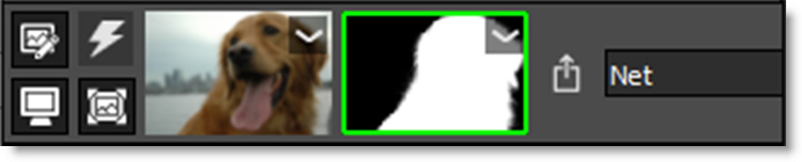
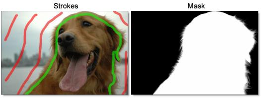
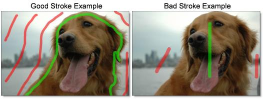
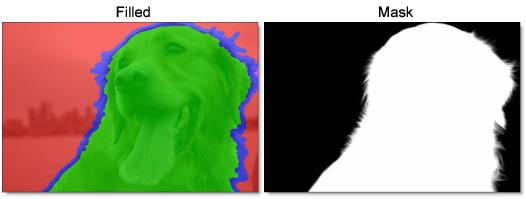
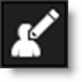
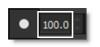
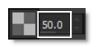
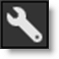

EZ Mask
EZ Mask is an easy to use interactive image masking tool capable of isolating almost any object in an image--even if you are dealing with fine hair detail, smoke, or reflections.
To work this magic, EZ Mask iteratively estimates the transparency value for every pixel in the image, based on a small sample of foreground (what you want to isolate) and background pixels marked by simple strokes on the image.
Results show that compared with previous approaches, our method is more efficient and requires minimal effort to extract high quality masks for foregrounds with significant semi-transparent regions.
Go to the EZ Mask Tutorial to see how it works.
EZ Mask consists of a combination of on-screen and toolbar controls.
Mask Creation
Trimaps
EZ Mask creates masks by using a trimap--a pre-segmented image consisting of three regions of foreground (what you want to isolate), background and unknown. Partial opacity values are then computed only for pixels inside the unknown region. Two trimap methods can be used: Stroke and Filled. When creating masks, start with the Stroke method and move on to the Filled method if the results are not satisfying.
Stroke
Unlike previous approaches, our trimaps can be relatively sparse consisting of individual foreground and background brush strokes. All pixels left unmarked will be treated as unknown. After processing, if any fine foreground details are missing from the mask, the Unknown brush can be used in these areas to help recover lost detail.
Stroke trimaps require little user input, but when color ambiguity exists between the foreground and background, a Filled trimap may create a more accurate mask. In addition, Stroke trimaps will also take longer to render as they require an extra calculation step.
Stroke Trimap Creation Tips & Tricks
• Make sure you place enough foreground and background strokes. A good stroke technique is to draw an inner outline around the object you are extracting using the Paint Foreground brush and an outer outline using the Paint Background brush.
• The strokes should be near the boundary of the object, but not right up against the edge.
• Strokes that are closer to the boundary will dominate the creation of the mask.
• If the foreground or background has varying colors, the strokes should cover these colors.
• After processing the mask, if you see gray areas in the foreground object that should be completely white, make additional foreground marks in those areas.
• If you see gray mask areas in the background that should be completely black, make additional background marks.
• If any fine foreground details are missing from the mask, click on the Unknown brush and draw over them with the left mouse button. This instructs EZ Mask to pay special attention to these areas and will help recover lost detail.
• The general rule is don’t put different stroke types too close together unless you need to.
Warning: If you only provide a few sparse strokes, a Stroke trimap will take longer to process than a filled trimap.
Filled
Foreground and background brush strokes are used to mark definite foreground and background pixels while the Unknown brush is used to mark unknown, or mixed regions. Using this method, the entire image is painted/filled with one of the three brushes.
Filled trimaps process faster than Stroke trimaps and can result in extracting a more accurate mask, most notably when color ambiguity exists between the foreground and background. However, they can be tedious to create and tend to fail for images with large portions of semi-transparent foreground where the trimap is difficult to create manually.
Filled Trimap Creation Tips & Tricks
• First, define unknown areas by selecting the Paint Unknown brush and drawing around the edges of the foreground (what you want to isolate) with the left mouse button. Include as little solid foreground areas as possible.
• Ideally, the unknown region in the trimap should only cover transparent pixels whose actual values are not completely foreground or background. In other words, the unknown region in the trimap should be as thin as possible to achieve the best masking result.
• Next, fill in the solid foreground area by selecting the Paint Foreground brush and the Fill tool. Click inside the area defined by the blue, Unknown brush. The foreground area automatically fills in with the green foreground color.
• Last, mark background areas by using the Paint Background brush and the Fill tool. Since the Fill tool is already enabled, you don’t need to select it again. Click outside of the area defined by the blue, Unknown brush. The background area automatically fills in with the red background color.
Note: Large foreground objects take longer to process than small ones.
Brushes
Paint Foreground
Click the Paint Foreground icon and draw to mark the foreground area--the region to be isolated. With each click and drag of the mouse, a green line is drawn.
Note: If you click with the left mouse button, press Shift and then click in a different location, a straight line is drawn. This will work with any brush type. If you keep Shift depressed while clicking, you will create interconnected straight lines. This is very useful when using a mouse.
Paint Background
Click the Paint Background icon and draw to mark the background area. With each click and drag of the mouse, a red line is drawn.
Note: You can quickly create background strokes without selecting the Paint Background brush by painting with the right-mouse button. This temporarily draws with the Paint Background brush and when the right-mouse button is released, the previously selected brush becomes active.
Paint Unknown
Click the Paint Unknown icon and draw to mark the unknown area. With each click and drag of the mouse, a blue line is drawn.
When drawing a stroke trimap, certain foreground details may be missing after the mask is generated. Using the Paint Unknown brush in these areas can sometimes help recover lost detail.
Paint Missing
The Paint Missing brush is used to mark missing foreground areas--fine details such as strands of hair that may be missing after the mask is generated. Using the Paint Missing brush in these areas can sometimes help recover lost detail. With each click and drag of the mouse, a purple line is drawn.
Note: The Paint Missing brush has a Sensitivity parameter located in Settings (Wrench icon) > Process Options. It’s preset value will work for most images. However, the higher the value, the more details are brought out.
Eraser
Erases existing brush strokes.
Fill
Using the current brush, the Fill tool fills a region defined by a brush stroke or the edges of the screen.
Brush Parameters
Size
Sets the size of the brush.
To set the brush size:
1 Click and drag on the Brush Size number field.
or
2 Click on the Brush Size number field, enter a value and hit Enter.
or
3 Resize the brush in the Viewer by holding Ctrl/Cmd and dragging in or out.
Paint Overlay Opacity
Sets the opacity of the foreground, background and unknown brush strokes.
To set the paint overlay opacity:
1 Click and drag on the Paint Overlay Opacity number field.
or
2 Click on the Paint Overlay Opacity number field, enter a value and hit Enter.
Settings
Various EZ Mask preferences can be set by clicking the Settings icon.
Foreground Color
Sets the color of the Paint Foreground brush.
Background Color
Sets the color of the Paint Background brush.
Unknown Color
Sets the color of the Paint Unknown brush.
Missing Color
Sets the color of the Paint Missing brush.
Process Options
Deartifact
Blurry artifacts can be generated while attempting to extract objects that have drop shadows, similar colors to the background or out of focus edges. Deartifact can be used to limit these artifacts.
Deartifact
Turns deartifact on or off.
Amount
Sets the amount of deartifacting.
Missing Brush
Sensitivity
Sets the sensitivity of the Missing Brush. The higher the value, the more details are brought out.
Reset
Clears all brush strokes.
Mask Processing (Enter)
Generate Mask
Generates the mask. Click this after creating either foreground and background strokes or a filled trimap. You can use the Enter key to trigger the mask processing.